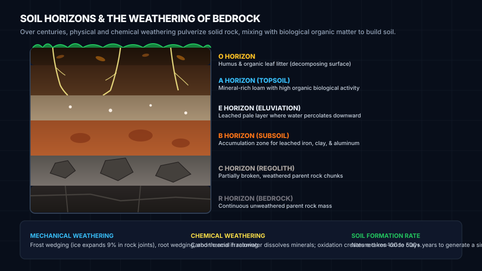

Rocks & Soil: From Bedrock to Living Earth
Soil is not broken dirt—it is a living, stratified skin forged over centuries as wind, water, and ice grind solid bedrock into sediment, and biological life infuses it with carbon, nutrients, and pore networks.
1 · The Living Soil Profile (Horizons O to R)
As bedrock breaks down from the bottom up and organic matter decays from the top down, distinct horizontal layers form. Click on each horizon to examine its depth, composition, and ecological role.

O Horizon: Organic Humus Layer
The uppermost skin of the forest or meadow. Consists of decomposing plant debris, decomposing leaf litter, mycelial networks, insects, and dark decomposed organic matter (humus). Humus acts like a sponge, holding up to 90% of its weight in water.
2 · Bedrock Weathering Engine
Bedrock is torn down by two fundamental forces: Physical/Mechanical weathering (which fractures rock into smaller pieces without altering minerals) and Chemical weathering (which dissolves or transforms minerals into clays and oxides).
Frost Wedging (Ice)
Liquid water enters microscopic fissures. When temperature drops below 0°C, ice crystals expand by 9%, exerting outward pressures exceeding 200 megapascals—enough to shatter granite boulders.
Carbonation & Acid Rain
Rainwater naturally absorbs atmospheric CO₂ to form weak carbonic acid (H₂CO₃). On limestone (calcite CaCO₃), it dissolves the rock into soluble calcium bicarbonate, creating sinkholes and caverns.
Hydrolysis into Clay
When feldspar in granite reacts with acidic water, potassium ions are leached away and the hard silicate mineral breaks down into microscopic sheets of soft, hydrated kaolinite clay.
3 · The USDA Soil Texture Triangle
Soil texture is defined solely by the relative proportion of mineral particles smaller than 2 millimeters: Sand (0.05–2.0 mm, gritty), Silt (0.002–0.05 mm, floury), and Clay (< 0.002 mm, sticky). Drag the sliders or click on the triangle diagram to discover the 12 USDA textural classes.
4 · Soil Texture Hydrometer Jar (Stokes' Law)
How do soil scientists determine sand, silt, and clay percentages without a microscope? By shaking soil in water! According to Stokes' Law, terminal settling velocity depends directly on the square of grain diameter ($v \propto d^2$). Coarse sand sinks in seconds; microscopic clay floats for days.
Mason Jar Soil Separation Lab
Mix 1 cup of garden soil with water and 1 teaspoon of liquid detergent (to disperse clay clusters). Shake vigorously for 2 minutes. Watch the three distinct sediment horizons form over time:
5 · Soil Percolation & Water Infiltration
Water movement through soil governs flood risk, groundwater aquifer recharge, and plant hydration. Test how identical 100 mL volumes of water drain through Sand, Loam, and Clay columns.
Sandy Soil
Large macropores · Low capillarityLoam Soil
Balanced micro & macroporesClay Soil
Sub-microscopic pores · High friction6 · The Field Feel & Ribbon Test
Soil scientists in the field don't carry sieves or hydrometers. They use the tactile USDA Ribbon and Feel Method. Can you deduce the texture class of these four mystery biome field samples?
Sample #1: Georgia Piedmont Subsoil
You take a walnut-sized soil ball, moisten it, and squeeze it between your thumb and forefinger. It rolls smoothly without cracking and pushes out into a cohesive, flexible ribbon over 6 cm long before snapping. When rubbed against your palm with excess water, it feels greasy, shiny, and sticky with almost no gritty feeling.
- Ball test: Holds tightly together
- Ribbon length: > 5 cm (High plastic cohesion)
- Wet palm feel: Extremely sticky, zero grit
Field Soil Scientist Flowchart
Step 1: Ball Squeeze
Moisten a handful of soil. Squeeze into a ball. If it crumbles and cannot hold a ball shape, it is Sand.
Step 2: Ribbon Squeeze
Roll into a cigar-shaped cylinder (1/2" diameter). Push it upward between thumb and forefinger to form a ribbon of uniform thickness (1/8"). Let it self-break under its own weight:
- < 2.5 cm (1 inch): Loam / Silt Loam / Sandy Loam
- 2.5 to 5 cm (1–2 inches): Clay Loam / Silty Clay Loam
- > 5 cm (> 2 inches): Heavy Clay
Step 3: Wet Palm Grit Check
Pinch a small pea-sized pinch into your palm, add water, and rub with index finger. If gritty = Sand dominant; if silky/floury like talcum powder = Silt dominant; if sticky and stain-inducing = Clay dominant.